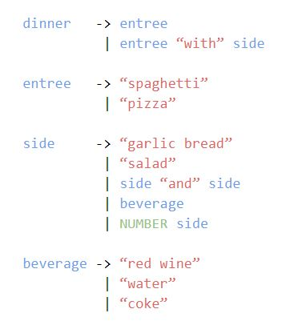
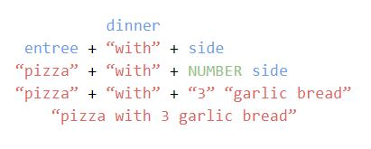
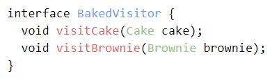
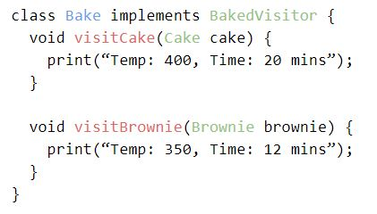
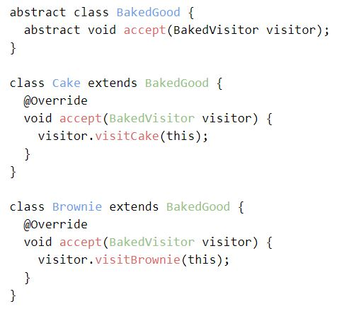

Weekly Goals
Week 7
- Start research on a parser which turns the tokens of the scanner into a syntax tree.
- Learn what syntax trees are and how they're represented in actual java code.
- Type up my job shadow report.
Week 8
- Continue research and work on the parser.
- Begin revamping my inintial project presentation into my midyear presentation.
Week 9
- Work on Journal #3 by finishing initial research on parsers.
- Type up a syntactical grammar reference (effectively a list of grammar rules to determine which "sentences" are valid and which are not).
My Research and What I Learned
All research done for this Journal comes from craftinginterpreters.com, in my bibliography.
Syntactic Grammar
Earlier we created the scanner, which essentially chunked our program of characters into words called "tokens". The next step in the process is the parser, which will take the words and make them into sentences, only if they are in a coherent order.
Syntactic grammar is needed to explain the structure of our sentences similar to how our lexical grammar explained our vocabulary. This is similar to how languages have definite words (food is a word, xxfhed is not, this is lexical grammar) and sentence structure rules (need at least 1 noun and 1 verb, this is syntactic grammar).
This syntactic grammar moves up a level on something called the Chomsky hierarchy. The Chomsky hierarchy essentially categorizes the usefulness and scope of different grammars. Our new syntactic grammar is something called a context-free grammar while our previous, lexical grammar was a regular grammar. Our syntactic grammar is a level above our lexical grammar on the Chomsky heirarchy because it has a level of abstraction. It deals with if "sentences" are valid, whereas a regular grammar, with a smaller scope, deals with if "words" are valid. The regular grammar (scanner) uses characters as building blocks and the context-free grammar (parser) uses words as building blocks.
This context free grammar is a set of rules called productions, each with a head (its name), and a body (the actual rule within the grammar). A "grammar rule" with a "name" and "instructions" reworded into this language vocabulary is a "production" with a "head" and a "body". A basic example of a production for english sentences might have the head of "sentence" and the body of "noun verb". This production is used for creating sentences and the body says that a sentence is only valid if it has both the components, a noun and a verb. The components of a body of a production are called symbols.
Symbols are basically a word in the sentence of the production. For example a production with the body "noun verb" has two symbols, noun and verb. A body of "noun verb adjective noun" has four symbols. Symbols can also either be terminal (which are simply words in the vocabluary of the language), or nonterminal (which are pointers to other productions within the grammar). It’s also important to note that multiple productions can share the same head, each with different bodies that can be chosen. For example, the production "sentence" can have both the heads of "noun verb" and "noun verb adjective verb", both are valid productions of sentences.
An example of a context free grammar for ordering dinner is shown below. To help read this, anything on the left of an arrow is a head, like "dinner" or "entree" and the things to the right are bodies connected to that head. The "|" simply means that head can connect to any of the listed bodies, for example selecting "side" could either return "garlic bread" or "salad" or any other listed options. The four productions in this grammar are dinner, entree, side, and beverage. They combine to allow many different meals to be made with only a short set of rules.


To help further explain types of symbols, anything in a body that's blue is nonterminal, anything red is a fixed value terminal and anything green is a terminal of varying value. Let's say you want to order dinner, you start with the production "dinner", from there you select "entree 'with' side". At that point you have 2 nonterminals, entree and side, which you still need to make decisions on, but the "with" is terminal and a final part of your order. You see you have to decide on an entree, so you go to the entree production, and select the "pizza" option. Now your current dinner order is "'pizza' 'with' side" and you still need to decide your side. You go to the side production, and select "NUMBER side" making your order "'pizza' 'with' NUMBER side". "NUMBER" is a terminal symbol, but of varying value, so you get to choose a number, 3 in this case. At the same time you see that you have the nonterminal symbol "side" still in your order, so you select "garlic bread". Now every symbol in your order is terminal, so there is nowhere left to go. Your dinner order is now "pizza with 3 garlic bread" which is coherent. These rules prevent you from ordering something incoherent like "with with salad pizza 5 5 water". The same principal applies when creating a language or programming language, we need to have rules to create coherent sentences, we need a syntactic grammar for our language.
This whole time talking about syntactic grammar, we have also been talking about syntax trees. Syntax trees are just the tree structures that these grammars can follow. The root of "dinner" splits into the branches of "entree" "with" and "side", of which "entree" continues onto "pizza" and "side" splits into "NUMBER" and "side" which both further grow into "3" and "garlic bread" respectively. These trees can become extremely long and complex, especially with recursive calls like how "side" could produce "side 'and' side", allowing for infinte sides to be ordered.
Implementing Syntax Trees
Although it seems kind of useless right now, we are going to program another data structure that helps the parser and interpreter to communicate and manipulate the syntax trees. Because this interpreter is being built in Java, an object-oriented language, every type of token, every expression, gets its own class in this new data structure.
The Expression Problem
The issue with programming our new data structure with individual classes comes when we try to manipulate the data. Each individual class has unique attributes and a unique context in which we need to operate on it. Baking a cake and baking brownies are different, similar, but slightly different. When we want to add a new operation to all our expression classes, we would have to go back and write a new method for every single class, which is horribly time consuming and inefficient. The good thing about object-oriented programming languages is that you can easily add a new expression class when you want to add new expressions.
Functional programming languages are exactly the opposite. Because data and behavior is seperate, to add a new operation to all data, you simply write a function. The difficulty with function programming languages is that adding a new expression requires you to adapt every single operation function to accomodate the uniqueness of the new expression.
You can think of expressions as rows in a grid, and operations as columns. Object-oriented languages are good at adding rows, while functional programming languages are good at adding columns. This is called the expression problem because nobody has found a way to easily add both expressions and operations, nobody has found a way to add both rows and columns efficiently.
The Visitor Pattern
The visitor pattern is a design pattern used in object oriented languages to help us add operations in the expression problem more easily. In reality, it mimics the behaviour of functional programming languages within object-oriented languages, which can help us to minimize the inefficiencies of using an object-oriented language posed by the expression problem.
To implement the visitor pattern, we create an interface with abstract “visitor” methods for each expression class in our program. To add a new operation, we can create a new class that implements the interface, and complete the abstract visitor methods to have any desired operation (even with any neccessary customization for each expression specifically).
Below is the first part of what we described above, an interface with abstract methods for each of our "expressions", in this case we are using cake and brownies as our expressions, and we will eventually add the operation "bake".

The next image is the operation "bake". It finishes the methods visitCake and visitBrownie with specific code about baking brownies or baking a cake.

The next step is to add an “accept” method into each of the existing expression classes. The accept method takes a visitor object and calls the appropriate visit method for that expression type. This allows us to simply call the accept method on any expression, and pass it the operation we want to perform. It doesn't matter what type of expression it is, you can always call accept, because each expression inherits accept from the abstract parent class. Calling cake.accept() and brownie.accept() are both valid, and you can pass either, whichever operation you want to perform. Instead of having to call a different method name for each expression/operation combonation, you simply call "expression.accept(operation)" and it's universally accepted.
Here's an example of an abstract parent class, from which cake and brownie inherit and override the accept class. Each expression's accept method calls the appropriate visit method, from the appropriate operation.

Accomplishments
Week 7
- I began research on the parser, which led me to begin research on context-free grammars and syntax trees.
- I was still researching syntax trees at this point, and didn't fully understand them yet though.
- I completed and turned in my job shadow report.
Week 8
- I further researched parsers, now fully understanding context-free grammar, syntax trees, and the expression problem. I started reading on the visitor problem as well.
- I've started working on my midyear presentation, just adding in accomplishments and changing the plans I've completed into progress updates.
Week 9
- This journal was probably the biggest accomplishment of the past few weeks because of all the research I had to put into it. I tried to summarize the best I could, shortening a lot of the information I took in.
- I wasn't able to finish my own syntactic grammar reference this week. I did make a short one about ordering dinner to demonstrate my understading in the research secion, but the much larger one for my language isn't made yet.
Reflection on Goals and Timeline
Goals
I've been pretty consistently hitting my goals, except for the last one of week 9. Although I feel I'm working at a pretty good pace, I want to pick it up. I want to be able to refine my project and hit stretch goals, so I want to get ahead over weekends.
Timeline
Along with my goals, I've been keeping up with my timeline marks pretty well. I've been on schedule but I want to get ahead of schedule to do more with my project. I revised my timeline a little while ago, just reordering some goals and it's been a lot more on track than before. I think I'm in a good place right now, I'm just trying to put myself into a great place.